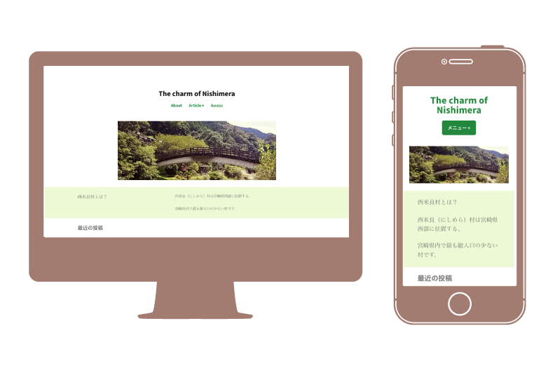

The charm of Nishimera
制作期間：3ヶ月
使用ツール：WordPress,Illustrator
課題制作
西米良(にしめら)村の魅力を発信するために制作したwebサイトです。人口1000人程度の小さな村ですが、温泉があったり、花火大会があったり、イメージキャラクターが村中で使われていたりと、とても魅力で溢れている西米良(にしめら)村をより多くの人に知ってもらいたいと思い制作しました。
サイトはこちら→The charm of Nishimera